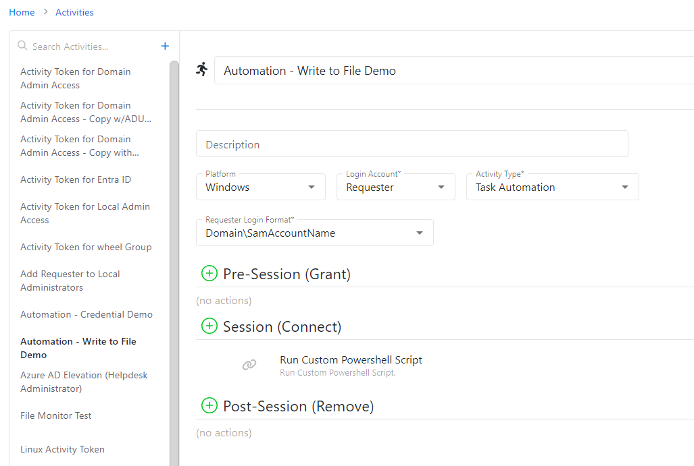

Overview
This article provides an example of a Task Automation script that can be used to write to a specified file on the targeted resource. This will give a basic framework on using Task Automation to write to files, and can be modified as needed. The example provided is for a simple find and replace script.Summary
1. In NPS, navigate to the Activities page and create an Activity with the "Task Automation" Activity Type. The activity should be configured to provide sufficient privilege to remotely execute scripts on the target resource, and the Login Account, Requester Login Format, and Pre- and Post-Session action steps should reflect this.
2. In the Session of the Activity, click the "+" button and add a "Run Custom Powershell Script" action step.
3. Supply the following script block inside of the action step:
$findString = "findMe"
$replaceString = "replaceMe"
$filePath = "C:\sampledir\example.txt" #specify your file path here!
Import-Module (Join-Path $SbPAMScriptDirectory "SbPAMWindows.psm1")
if (![string]::IsNullOrEmpty($HostId)) {
$targetHost = Get-SbPAMHost -Id $HostId
if ($null -eq $targetHost -or [string]::IsNullOrEmpty($targetHost.DnsHostName)) {
Write-Error "Unable to find host."
exit 2
}
Write-Host (ConvertTo-Json $targetHost)
}
$session = New-SbPAMPSSession -RemoteHost $targetHost -Credential (Get-PSCredential -Credentials $Credentials)
if ($null -ne $session) {
try{
Add-SbPAMActionLog -Type Info -Message "Running custom powershell script block - Write to File: $filePath - Find: $findString - Replace: $replaceString"
Invoke-Command -Session $Session -ArgumentList $findString,$replaceString,$filePath `
-ScriptBlock {
param($findString,$replaceString,$filePath)
try {
(Get-Content $filePath).Replace($findString,$replaceString) | Set-Content $filePath
Add-SbPAMActionLog -Type Info -Message "Running custom powershell script block - Write to File - SUCCESS"
}
catch {
Add-SbPAMActionLog -Type Info -Message "Running custom powershell script block - Write to File - ERROR"
} } -ErrorAction SilentlyContinue
}
finally {Remove-PSSession -Session $session}
}
Add-SbPAMActionLog -ActionQueueActionId $ActionQueueActionId -Type Info -Message "Finished custom powershell script block - Write to File: $filePath - Find: $findString - Replace: $replaceString"
4. Modify the script block according to your needs. This example is for a find and replace, with the $findString and $replaceString containing the original and replacement values, and the $filePath containing the local path for the target file. This is just a basic example and could be modified for different use cases.5. Save the activity. Ensure that the activity is added to an Access Policy. It can now be run, and will find/replace strings in the targeted file on the targeted resource.